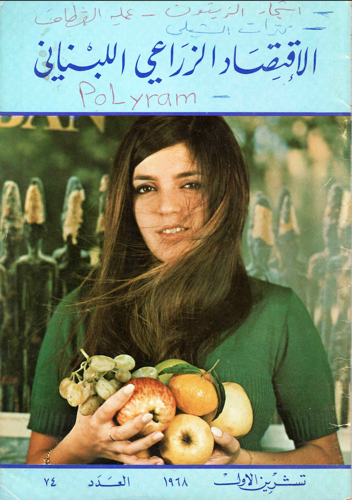

Whitehead
2021-05-24
Systems of thought which approached the problems of nature in the 17th century where predominantly formed through metaphysical analysis by its Geniuses. Physics and its laws dominated the epoch’s scientific philosophy, putting aside other perceptions of science which contrasted with its materialistic expression, such as biological notions that were ‘more subtle and divine than sense.'[@Whitehead_1925,43] A divination of knowledge illustrates an emergent line of thought where the modern world sought naturalistic arts, and observational habits, to be more akin to fundamental truths than the deductive rationalism of end of century scholastics (such as Newton, Galileo, Descartes, Boyle, Pascal .



الزراعي اللبناني
2021-02-24